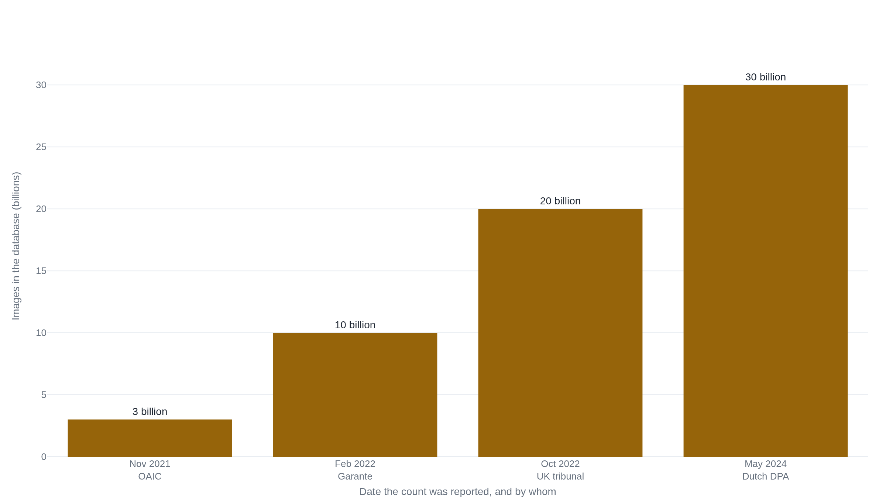

Regulators kept ruling Clearview illegal as its face database grew past 30 billion photos
Clearview turned billions of public photos into biometric codes and sold face searches to police, and the European fines against it have gone largely uncollected.
Why this matters
Clearview AI took the public internet, the billions of photos people posted of themselves and each other, and turned it into a face-search engine it sold to police. From each picture it builds a biometric code, a numeric fingerprint of a face, and lets a client find every other photo of that same face in its collection. The collection passed thirty billion images in 2024 and was still growing. Privacy regulators on several continents have ruled the whole practice unlawful. Whether that ruling has stopped anything, or cost Clearview anything, is the harder question, and the one this lesson is really about.
- 01
- A ranked list of candidates was enough to arrest the wrong man: how one face-match sent Detroit police after the wrong person, and the demographic error rates behind it.
- 02
- Rite Aid scanned every shopper's face, and mostly flagged the innocent: how a store watchlist checked millions of shoppers and produced mostly false alarms.
A face index scraped from the public web
Clearview AI operated quietly until January 2020, when Kashmir Hill reported in The New York Times that a little-known company had scraped billions of photographs from the public internet and was selling searches against them to police. By late 2021 Australia's privacy regulator, investigating on its own, put the number at more than three billion images, collected from social media and other public sites without the knowledge or consent of the people in them.1 From each photo the company derives a biometric template: a string of numbers computed from the geometry of a face, precise enough to match one picture of a person to another.1
The product works like a reverse image search for faces. A police client uploads a photo, which the tribunal that later examined the system called a “Probe Image,” and Clearview returns other photos of that same face from its database, each tagged with the web address where it was scraped.2 The UK First-tier Tribunal recorded that every one of Clearview's clients “carry out criminal law enforcement and/or national security functions,” in the United States and in countries including Panama, Brazil, Mexico and the Dominican Republic.2
The three-billion figure was already old by the time regulators reached it. Italy's authority counted more than ten billion faces in early 2022,3 the UK tribunal recorded over twenty billion that October,2 and by 2024 the Dutch regulator put the collection at more than thirty billion.4 Clearview has since claimed larger numbers still, in the forties, but those are the company's own assertions with no regulator to confirm them. Set only the figures a court or an authority actually counted side by side, and the scraping never paused for any of the rulings against it.

The same finding in five countries
Between 2021 and 2024, privacy regulators in five countries examined Clearview and arrived at the same conclusion. Australia went first. On 3 November 2021 Commissioner Angelene Falk determined that Clearview had breached the Privacy Act 1988 by collecting Australians' sensitive information without consent and by unfair means, and she ordered the company to stop collecting facial images from people in Australia and to destroy what it already held.1
When Australians use social media or professional networking sites, they don't expect their facial images to be collected without their consent by a commercial entity to create biometric templates for completely unrelated identification purposes.1 Angelene Falk, Australian Information Commissioner, 3 November 2021
Europe's four fines rest on two findings the reader needs in order. The first is what the photos legally are. Under the European Union's General Data Protection Regulation, a picture used to recognize someone by their face is “biometric data,” which sits in a protected class the law calls Article 9 data and forbids anyone to process at all unless a narrow exception applies.4 The second is that the company had no right to process it. Every controller, meaning the organization that decides why and how personal data is used, needs a “lawful basis,” one of a short list of justifications such as the person's consent, before it may touch personal data.5 Clearview had neither. It never obtained consent, and France's CNIL found it could not fall back on “legitimate interests” given “the intrusive character of the data collection and data subjects' lack of awareness.”5 Greece's authority reached the same place, holding that the company had “violated the principles of lawfulness and transparency.”6
Clearview does not dispute the central fact. Its answer is that the photos were “sourced from public-only web sources” and that its customers are “government agencies.”7 No one, Clearview included, claims anyone in the database agreed to be there. The disagreement is not about what happened. It is about whether a photo being public makes it free to take, and five regulators answered no.
| Authority | Date | Penalty | Order and basis |
|---|---|---|---|
| Australia OAIC | Nov 2021 | no fine | Collected sensitive data without consent and by unfair means; cease and destroy.1 |
| Italy Garante | Feb 2022 | €20 M | Biometric data, no lawful basis, indefinite storage; delete and stop.3 |
| Greece HDPA | Jul 2022 | €20 M | Unlawful and untransparent processing; ban and deletion.6 |
| France CNIL | Oct 2022 | €20 M | No consent, no legitimate interest; delete within two months.5 |
| Netherlands AP | May 2024 | €30.5 M | Biometric code, no Article 9 exception; stop and delete.4 |
Found unlawful, rarely enforced
A regulator finding a practice unlawful is not the same as a penalty being paid, and Clearview is where the two come apart. Take the United Kingdom. The Information Commissioner fined Clearview just over £7.5 million in May 2022 and ordered it to delete UK residents' data.8 Clearview appealed, and in October 2023 the First-tier Tribunal set the fine aside. It did so not because the collection was lawful but because it held the regulator had no jurisdiction: the searches were run for foreign governments' law-enforcement work, which the tribunal placed outside the reach of UK data-protection law.2 Two years later the Upper Tribunal disagreed, ruling in October 2025 that the lower tribunal had “erred materially in law,” restoring the Commissioner's authority, and sending the case back to be decided on its merits.9 Clearview was then granted permission to appeal once more, to the Court of Appeal, on 19 December 2025.10 So the £7.5 million has never been paid, and no court has yet ruled on whether the privacy findings themselves are right, only on who holds the power to make them.
The European fines face a plainer obstacle. Clearview is a US company that appointed no representative in Europe, itself one of the breaches Italy cited, which leaves the authorities holding judgments with little to collect against.3 France wrote the problem into its own order: it attached a penalty of €100,000 for every day Clearview ignored the demand to delete.5 The rulings are real findings of law. Whether the money is ever collected is a separate question, and the record here shows little of it changing hands.
The one order that reshaped Clearview's business came from an American courtroom under a state statute. In 2020 the American Civil Liberties Union sued Clearview in Illinois under the Biometric Information Privacy Act, a law that requires a company to get written permission before capturing a person's faceprint.11 The 2022 settlement did not delete the database. It bars Clearview, nationwide, from selling access to its faceprint database to private companies, and for five years from giving access to any Illinois police department or state agency.12 It limited who Clearview may sell to, not what it may collect.
A verification score sold as identification
Clearview's public defense leans on accuracy. It reports that in testing by the US National Institute of Standards and Technology its algorithm scored above 99%, including 99.81% on one set of visa photos and 99.76% on mugshots, and its chief executive called the results “an unmistakable validation.”13 The number is real. It measures the wrong task.
NIST tested Clearview on what it calls 1:1 verification: given two photographs, are they the same person? That is the question a phone answers when it unlocks to a face it already has on file. Clearview's product does the opposite kind of search, 1:many identification: given one photo, find that person among billions of scraped images. The second task is harder, and it gets harder as the database grows, because every extra face is another chance to return a confident match for the wrong person. A strong verification score says nothing about how often the 1:many search is right.
On that question the record is thin, and what exists is not reassuring. The only regulator to examine the identifications Clearview actually delivered, Australia's, found that the company took no reasonable steps to ensure the matches it handed to clients were accurate.1 Earlier, in 2020, before it had submitted to any NIST test, Clearview told police it “finds matches 75% of the time” and gave no false-positive rate. It also claimed to have cracked “a case of alleged terrorism in a New York City subway station” in seconds, a claim the New York Police Department denied, saying it “did not use Clearview technology to identify the suspect.”14
Both things can hold at once. Clearview's algorithm is genuinely good at verification, and NIST measured it. That is not evidence that a search against thirty billion scraped faces returns the right person, and no independent test of that search, on that database, exists in the public record. The marketing puts a verification score where an identification score would go, and the identification score does not exist.
The takeaway
The harder question the opener posed has an answer, and it is a discouraging one. Being ruled unlawful in five countries has not stopped Clearview or, on the evidence here, cost it much. The European fines target a company with no presence in Europe to collect against, and the UK penalty sits set aside while the courts argue over who may impose it. The single order that bit, an Illinois settlement, limited who Clearview may sell to rather than what it may collect, and the database grew straight through all of it, from three billion photos to more than thirty. What every regulator agreed on was the simplest point: no one in that database consented to be there, and Clearview never said they did. Public did not mean permitted. That is the finding that holds, whatever becomes of the fines.
- 01
- NIST Face Recognition Vendor Test: the government's testing program, and why 1:1 verification and 1:many identification are scored as separate problems.
- 02
- EFF: Face Recognition: how US law enforcement uses face recognition, and the fights over reining it in.
Sources
- Office of the Australian Information Commissioner · Clearview AI breached Australians' privacy
- First-tier Tribunal · Clearview AI Inc v The Information Commissioner [2023] UKFTT 819 (GRC)
- Lewis Silkin · Italian DPA fines Clearview AI €20 million
- Hunton Andrews Kurth · Dutch regulator fines Clearview AI €30.5 million
- Hunton Andrews Kurth · CNIL fines Clearview AI €20 million
- Hellenic Data Protection Authority · Imposition of fine on Clearview AI Inc
- Clearview AI · Clearview AI wins appeal against UK ICO fine
- TechCrunch · Clearview AI fined by UK privacy regulator
- Upper Tribunal · Information Commissioner v Clearview AI Inc [2025] UKUT 319 (AAC)
- Ashfords LLP · The extra-territorial reach of the UK GDPR: Clearview AI is permitted to appeal
- ACLU of Illinois · ACLU v. Clearview AI
- ACLU · Settlement ensures Clearview AI complies with Illinois biometric privacy law
- Clearview AI · Clearview AI's platform achieves superior accuracy in NIST testing
- Techdirt · Clearview overstated its crime-solving power in pitches to police